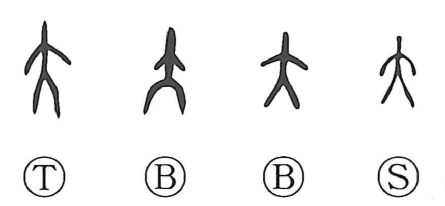

大

Kun: ookii, ookina, oo | On: dai, tai
big ・ large ・ great
Explanation
A pictograph of a person seen from the front with arms and legs outstretched, 大 originally portrays an expansive human figure and thus came to mean big, and by extension prosperous and excellent. This simple form became a seed for related graphs: placing a large “face” above it gives 天; inserting an ornamental hairpin through the topknot on the head yields 夫, the proper ceremonial attire of a bridegroom; adding a short horizontal stroke to the figure forms 立, standing at a set place; arranging such standing figures left and right produces 竝 (並), to stand in a row; and adding a small stroke below both sides creates 亦, the original graph of 腋 (armpit).